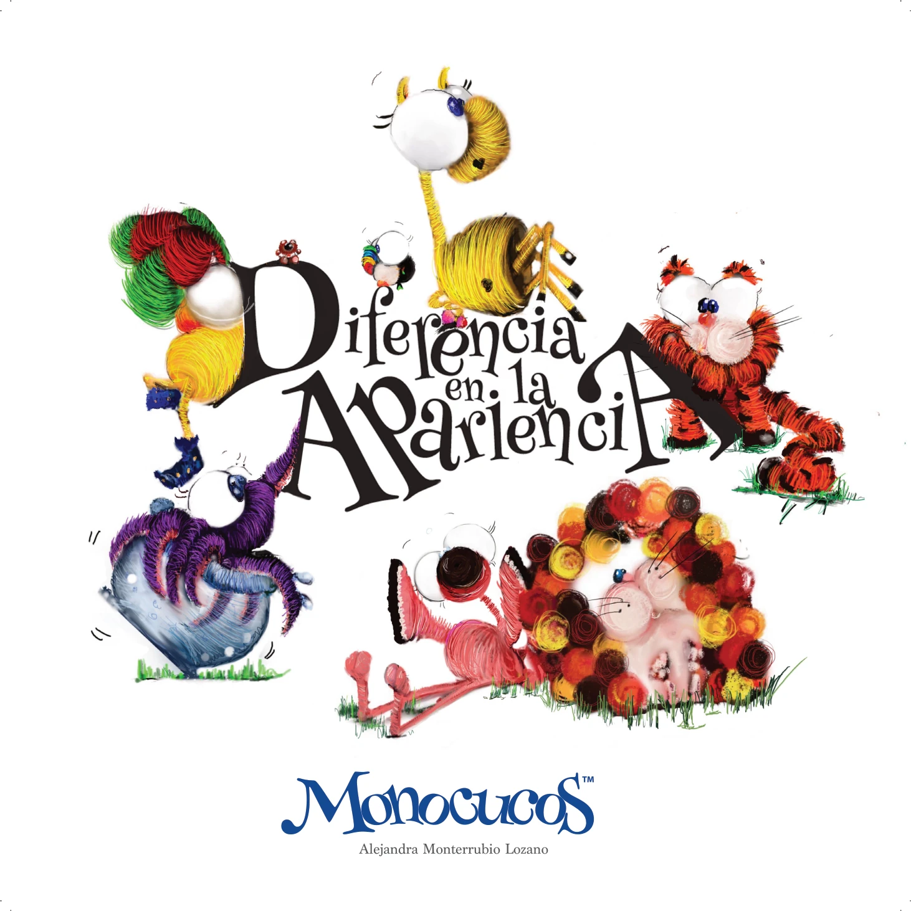

INCLUSIÓN · AUTOACEPTACIÓN · PERTENENCIA
Diferencia en la Apariencia
Aceptar la diversidad y acompañar a quienes se sienten diferentes.
InclusiónAutoaceptaciónPertenencia
EL UNIVERSO MONOCUCOS
Cada historia abre una conversación. Historias para descubrir, sentir, preguntar y aprender.
LAS HISTORIAS
Los personajes y sus historias pueden convertirse en herramientas para conversar, jugar, imaginar y trabajar emociones y valores.
MÁS ALLÁ DEL LIBRO
Los personajes y sus historias pueden convertirse en herramientas para conversar, jugar, imaginar y trabajar emociones y valores.
Una historia puede abrir una puerta. La conversación puede abrir un mundo.
DESCUBRE LAS EXPERIENCIAS MONOCUCOSMONOCUCOS
Explora el universo de personajes, historias y experiencias.
EXPLORAR HISTORIAS